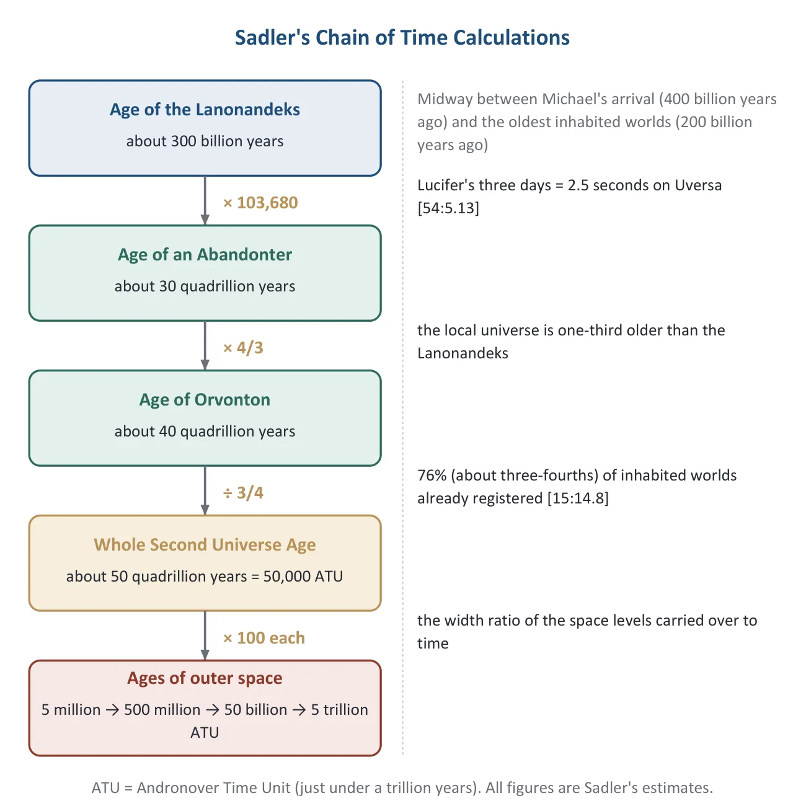

Original: Apêndice XVII, Magnitudes temporais do universo-mestre (pp. 389–396)
O texto oferece ainda menos sobre o tempo do que sobre o espaço, mas Sadler constrói uma série de cálculos sobre um punhado de datas e números de registro. Primeiro ele calcula a idade de um abandonteiro, um nativo muito antigo de Uversa; daí deduz a idade de Orvônton e, daí outra vez, a duração de toda a segunda idade do universo. Por fim, transfere para o tempo a proporção espacial do apêndice anterior, a fim de estimar a duração das idades do espaço exterior. Para lidar com números tão imensos, ele inventa uma nova unidade de medida, a “Unidade de Tempo de Andronover”.
O primeiro assunto que Sadler escolhe é o abandonteiro. O Livro de Urântia apresenta os abandonteiros como cidadãos permanentes da esfera-sede de Uversa, criados pelos agentes dos Anciães dos Dias juntamente com os sete Espíritos Refletivos [37:9.12]. A idade deles não é dada. Sadler chega a ela por meio de Lúcifer.
Ele começa pela idade dos Filhos Lanonandeques, a ordem de Lúcifer. Michael começou a organizar Nébadon há cerca de quatrocentos bilhões de anos [119:0.7], e os Lanonandeques foram criados como grupo algum tempo depois. Os mundos habitados mais antigos de Nébadon, por sua vez, remontam a duzentos bilhões de anos [57:3.10], e os Lanonandeques, como Soberanos de Sistema e Príncipes Planetários, teriam de estar em atividade antes que existisse qualquer mundo habitado. A idade deles deve, portanto, situar-se entre quatrocentos e duzentos bilhões de anos. Sadler escolhe o ponto médio, trezentos bilhões.
Em seguida vem a relatividade do tempo.
O lapso relativo de tempo, do ponto de vista de Uversa, onde o litígio está pendente, poderia ser indicado, se disséssemos que o crime de Lúcifer foi levado a julgamento dois segundos e meio depois de cometido.54:5.13
Sadler lê essa passagem como uma proporção: três dias na vida de Lúcifer correspondem a dois segundos e meio na vida de um nativo de Uversa. Três dias contêm 259.200 segundos; divididos por 2,5, dão 103.680. Multiplicar trezentos bilhões de anos por 103.680 dá a idade do abandonteiro: 31.104 trilhões de anos, ou cerca de trinta quatrilhões em números redondos. Como a nebulosa de Andronover nasceu há 987 bilhões de anos, um pouco menos de um trilhão de anos [57:1.3], esse abandonteiro é umas trinta mil vezes mais antigo do que Andronover.
O documento 54:5.13 compara “dois ou três dias” com “dois segundos e meio”, e a comparação surge de uma ilustração que põe o tempo de vida de um mortal ao lado do tempo de vida de Lúcifer. Sadler escolheu “três dias” para o seu cálculo e reinterpretou o lapso de tempo “do ponto de vista de Uversa” como o tempo de vida de um nativo individual de Uversa. Nada indica que o texto tivesse em vista tal cálculo. Os números deste apêndice devem ser recebidos, do começo ao fim, como aproximações plausíveis.
Assim como Nébadon é mais antigo do que os Lanonandeques, os seus nativos mais antigos, Orvônton deveria ser mais antigo do que os abandonteiros. Quanto mais? Sadler responde de novo com uma proporção. Se se considera que Andronover tem cerca de um trilhão de anos, os primeiros sessenta por cento desse período, até a chegada de Michael há quatrocentos bilhões de anos, foram dedicados inteiramente ao desenvolvimento físico. Datando a história de Nébadon a partir da chegada de Michael, o universo local é cerca de cem bilhões de anos, isto é, um terço, mais antigo do que Lúcifer. Aplicando a mesma proporção, Orvônton tem os trinta quatrilhões de anos do abandonteiro mais outros dez quatrilhões, ou seja, cerca de quarenta quatrilhões de anos.
Se Orvônton já tem quarenta quatrilhões de anos, quanto dura a segunda idade inteira, contando desde o tempo em que os Anciães dos Dias foram criados até que os superuniversos estejam estabelecidos em luz e vida? Sadler calcula várias porcentagens que indicam quanto do percurso já foi cumprido. Cerca de sete trilhões de mundos habitáveis estão planejados para o grande universo [15:2.9], e o número de registro de Urântia é o seguinte.
O número do vosso mundo, Urântia, no grande universo é 5 342 482 337 666.15:14.8
Dividir esse número por sete trilhões dá cerca de setenta e seis por cento. Na época em que Urântia foi registrada, portanto, a vida humana já tinha aparecido em um pouco mais de três quartos dos mundos planejados. Sadler trabalha outros números da mesma maneira.
| Dado | Cálculo | Porcentagem |
|---|---|---|
| Número de registro de Urântia [15:14.8] | 5.342.482.337.666 ÷ 7 trilhões | 76% |
| Número do Diretor do Censo de Nébadon [24:2.7] | 81.412 ÷ 100.000 | 81% |
| Número do supervisor de circuito terciário de Sálvington [24:1.11] | 572.842 ÷ 700.000 | 82% |
| Número dos supervisores de circuito secundários em Uversa [24:1.9] | 84.691 ÷ 100.000 | 85% |
| Número de Michael [33:1.1] | 611.121 ÷ 700.000 | 87% |
| Mundos habitados de Nébadon [32:2.9] | 3.840.101 ÷ 10 milhões | 38% |
| Mundos habitados de Satânia [32:2.10] | 619 ÷ 1.000 | 62% |
Os valores se agrupam entre setenta e seis e oitenta e sete por cento. Sadler também pondera as diferenças. Mesmo que os Michaels tenham sido criados em seqüência numerada, não há garantia de que tenham sido designados nessa mesma ordem; assim, os oitenta e dois por cento dos supervisores de circuito terciários podem refletir melhor a proporção de universos locais em funcionamento, e isso concorda bem com os oitenta e um por cento dos diretores do censo. Ou então pode ser que só o sétimo superuniverso esteja atrasado.
Entre a entrada em serviço de um universo local e o seu estabelecimento em luz e vida há uma distância imensa. Por isso Sadler faz da proporção de mundos habitados o seu indicador mais importante.
Um superuniverso torna-se estabelecido em luz e vida quando todos os seus universos locais componentes estiverem, assim, perfeccionados.55:11.1
Se um único mundo deixa de ser estabelecido, o seu universo local não pode ser estabelecido; se um único universo local não está estabelecido, o superuniverso não pode estar. Arredondando setenta e seis por cento para baixo, para setenta e cinco, Sadler conclui que três quartos da segunda idade já passaram. Nesse caso, é preciso somar um terço aos quarenta quatrilhões de anos de Orvônton para obter a duração da idade inteira. Ele reduz os cerca de treze quatrilhões adicionais para dez e estima a segunda idade do universo completa em cerca de cinqüenta quatrilhões de anos, cinqüenta mil vezes a idade de Andronover.

Se a segunda idade dura cinqüenta quatrilhões de anos, quanto durarão as idades em que crescem os níveis do espaço exterior? Sadler simplesmente transfere a proporção espacial para o tempo: se cada nível espacial é cem vezes mais largo, a idade do seu crescimento deveria ser cem vezes mais longa. A idade do Nível Espacial Quaternário chega então a cem milhões de vezes a segunda idade, um número de anos que se escreve como um cinco seguido de vinte e quatro zeros. Usar números assim é tão incômodo quanto medir distâncias astronômicas em milhas.
Por isso Sadler cria uma unidade de tempo análoga ao ano-luz. Toma como unidade o período mais longo tratado em O Livro de Urântia, a idade de Andronover, um pouco menos de um trilhão de anos, e chama-a de “Unidade de Tempo de Andronover” (UTA).
| Idade do universo | Arena | Duração |
|---|---|---|
| Segunda idade | Sete superuniversos | 50.000 UTA |
| Terceira idade | Nível Espacial Primário | 5 milhões de UTA |
| Quarta idade | Nível Espacial Secundário | 500 milhões de UTA |
| Quinta idade | Nível Espacial Terciário | 50 bilhões de UTA |
| Sexta idade | Nível Espacial Quaternário | 5 trilhões de UTA |
Os níveis do espaço exterior precisarão de um tempo extraordinariamente longo para amadurecer, mas são proporcionalmente vastos.
Cada número deste apêndice se apoia sobre as suposições anteriores: a escolha de um ponto médio para a idade dos Lanonandeques, a referência dos três dias, o arredondamento para setenta e cinco por cento, a premissa de que o tempo é proporcional à largura espacial. Por isso, “cinqüenta quatrilhões de anos” ou “cinco trilhões de UTA” não é uma resposta, mas uma medida de ordens de grandeza. O próprio Sadler a oferece como pouco mais do que algo melhor do que um palpite sem cálculo. Mesmo assim, uma medida desse tipo permite sentir quão cedo, como uma aurora, a nossa idade presente se situa dentro de toda a história do universo-mestre.